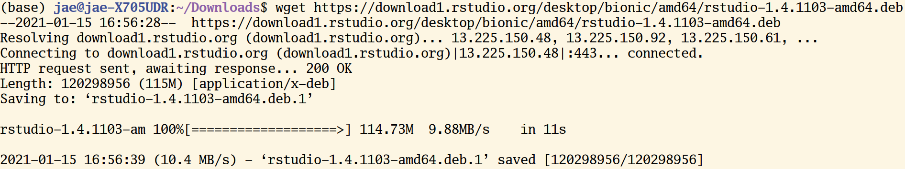

3.1 The Command Line
3.1.1 The Big Picture
As William Shotts the author of The Linux Command Line put it:
graphical user interfaces make easy tasks easy, while command-line interfaces make difficult tasks possible.
3.1.2 Why bother using the command line?
Suppose that we want to create a plain text file that contains the word “test.” If we want to do this in the command line, you need to know the following commands.
echo: “Write arguments to the standard output” This is equivalent to using a text editor (e.g., nano, vim, emacs) and writing something.> testSave the expression in a file named test.
We can put these commands together like the following:
Don’t worry if you are worried about memorizing these and more commands. Memorization is a far less important aspect of learning programming. In general, if you don’t know what a command does, just type <command name> --help. You can do man <command name> to obtain further information. Here, man stands for manual. If you need more user-friendly information, please consider using tldr.
Let’s make this simple case complex by scaling up. Suppose we want to make 100 duplicates of the test file. Below is the one-line code that performs the task!
Let me break down the seemingly complex workflow.
1. for i in {1..100}. This is for loop. The numbers 1..100 inside the curly braces {} indicates the range of integers from 1 to 100. In R, this is equivalent to for (i in 1:100) {}
2. ; is used to use multiple commands without making line breaks. ; works in the same way in R.
3. $var returns the value associated with a variable. Type name=<Your name>. Then, type echo $name. You should see your name printed. Variable assignment is one of the most basic things you’ll learn in any programming. In R, we do this by using ->
If you have zero experience in programming, I might have provided too many concepts too early, like variable assignment and for loop. However, you don’t need to worry about them at this point. We will cover them in the next chapter.
I will give you one more example to illustrate how powerful the command line is. Suppose we want to find which file contains the character “COVID.” This is equivalent to finding a needle in a haystack. It’s a daunting task for humans, but not for computers. Commands are verbs. So, to express this problem in a language that computers could understand, let’s first find what command we should use. Often, a simple Google or Stack Overflow search leads to an answer.
In this case, grep is the answer (there’s also grep in R). This command finds PATTERNS in each file. What follows - are options (called flags): r (recursive), n (line number), w (match only whole words), e (use patterns for matching). rnw are for output control and e is for pattern selection.
So, to perform the task above, you just need one-line code: grep -r -n -w -e "COVID''
Quick reminders
- grep: command
- -rnw -e: flags
- COVID: argument (usually file or file paths)
Let’s remove (=rm) all the duplicate files and the original file. * (any number of characters) is a wildcard (if you want to identify a single number of characters, use ?). It finds every file whose name starts with test_.
Enough with demonstrations. What is this black magic? Can you do the same thing using a graphical interface? Which method is more efficient? I hope that my demonstrations give you enough sense of why learning the command line could be incredibly useful. In my experience, mastering the command line helps automate your research process from end to end. For instance, you don’t need to write files from a website using your web browser. Instead, you can run the wget command in the terminal. Better yet, you don’t even need to run the command for the second time. You can write a Shell script (*.sh) that automates downloading, moving, and sorting multiple files.
3.1.3 UNIX Shell
The other thing you might have noticed is that there are many overlaps between the commands and base R functions (R functions that can be used without installing additional packages). This connection is not coincident. UNIX preceded and influenced many programming languages, including R.
The following materials on UNIX and Shell are adapted from the software carpentry
3.1.3.1 Unix
UNIX is an operating system + a set of tools (utilities). It was developed by AT & T employees at Bell Labs (1969-1971). From Mac OS X to Linux, many of the current operation systems are some versions of UNIX. Command-line INTERFACE is a way to communicate with your OS by typing, not pointing, and clicking.
For this reason, if you’re using Mac OS, then you don’t need to do anything else to experience UNIX. You’re already all set.
If you’re using Windows, you need to install either GitBash (a good option if you only use Bash for Git and GitHub) or Windows Subsystem (highly recommended if your use case goes beyond Git and GitHub). For more information, see this installation guideline from the course repo. If you’re a Windows user and don’t use Windows 10, I recommend installing VirtualBox.
UNIX is old, but it is still mainstream, and it will be. Moreover, the UNIX philosophy (“Do One Thing And Do It Well”)—minimalist, modular software development—is highly and widely influential.

AT&T Archives: The UNIX Operating System
Unix50 - Unix Today and Tomorrow: The Languages
3.1.3.2 Kernel
The kernel of UNIX is the hub of the operating system: it allocates time and memory to programs. It handles the filestore (e.g., files and directories) and communications in response to system calls.
3.1.3.3 Shell
The shell is an interactive program that provides an interface between the user and the kernel. The shell interprets commands entered by the user or supplied by a Shell script and passes them to the kernel for execution.
3.1.3.4 Human-Computer interfaces
At a high level, computers do four things:
- run programs
- store data
- communicate with each other
- interact with us (through either CLI or GUI)
3.1.3.5 The Command Line
This kind of interface is called a command-line interface, or CLI, to distinguish it from the graphical user interface, or GUI, that most people now use.
The heart of a CLI is a read-evaluate-print loop, or REPL: when the user types a command and then presses the enter (or return) key, the computer reads it, executes it, and prints its output. The user then types another command, and so on until the user logs off.
If you’re using RStudio, you can use terminal inside RStudio (next to the “Console”). (For instance, type Alt + Shift + M)
3.1.3.6 The Shell
This description makes it sound as though the user sends commands directly to the computer and sends the output directly to the user. In fact, there is usually a program in between called a command shell.

What the user types go into the shell; it figures out what commands to run and orders the computer to execute them.
Note, the shell is called the shell: it encloses the operating system to hide some of its complexity and make it simpler to interact with.
A shell is a program like any other. What’s special about it is that its job is to run other programs rather than do calculations itself. The commands are themselves programs: when they terminate, the shell gives the user another prompt ($ on our systems).
3.1.3.7 Bash
The most popular Unix shell is Bash, the Bourne Again Shell (so-called because it’s derived from a shell written by Stephen Bourne — this is what passes for wit among programmers). Bash is the default shell on most modern implementations of Unix and in most packages that provide Unix-like tools for Windows.
3.1.3.8 Why Shell?
Using Bash or any other shell sometimes feels more like programming than like using a mouse. Commands are terse (often only a couple of characters long), their names are frequently cryptic, and their output is lines of text rather than something visual like a graph.
On the other hand, the shell allows us to combine existing tools in powerful ways with only a few keystrokes and set up pipelines to handle large volumes of data automatically.
In addition, the command line is often the easiest way to interact with remote machines (explains why we learn Bash before learning Git and GitHub). If you work in a team and your team manages data in a remote server, you will likely need to get access the server via something like ssh (I will explain this when I explain git) and access a SQL database (this is the subject of the final chapter).
3.1.3.9 Our first command
The part of the operating system responsible for managing files and directories is called the file system. It organizes our data into files, which hold information, and directories (also called “folders”), which hold files or other directories.
Several commands are frequently used to create, inspect, rename, and delete files and directories. To start exploring them, let’s open a shell window:
Let’s demystify the output above. There’s nothing complicated.
- jae: a specific user name
- jae-X705UDR: your computer/server name
~: current directory (~= home)$: a prompt, which shows us that the shell is waiting for input; your shell may show something more elaborate.
Type the command whoami, then press the Enter key (sometimes marked Return) to send the command to the shell.
The command’s output is the ID of the current user, i.e., it shows us who the shell thinks we are:
More specifically, when we type whoami the shell, the following sequence of events occurs behind the screen.
- Finds a program called
whoami, - Runs that program,
- Displays that program’s output, then
- Displays a new prompt to tell us that it’s ready for more commands.
3.1.3.10 Communicating to other systems
In the next unit, we’ll focus on the structure of our own operating systems. But our operating systems rarely work in isolation; we often rely on the Internet to communicate with others! You can visualize this sort of communication within your own shell by asking your computer to ping (based on the old term for submarine sonar) an IP address provided by Google (8.8.8.8); in effect, this will test whether your Internet is working.
Note: Windows users may have to try a slightly different alternative:
(Thanks Paul Thissen for the suggestion!)
3.1.3.11 File system organization
Next, let’s find out where we are by running a pwd command (print working directory).
At any moment, our current working directory is our current default directory, i.e., the directory that the computer assumes we want to run commands in unless we explicitly specify something else.
Here, the computer’s response is /home/jae, which is the home directory:
Additional tips
You can also download files to your computer in the terminal.
- Install wget utility
- Download target files

Home Directory
The home directory path will look different on different operating systems. For example, on Linux, it will look like
/home/jae,and on Windows, it will be similar toC:\Documents and Settings\jae.Note that it may look slightly different for different versions of Windows.
whoami
If the command to find out who we are is
whoami,the command to find out where we are ought to be calledwhereami,so why is itpwdinstead? The usual answer is that in the early 1970s, when Unix was first being developed, every keystroke counted: the devices of the day were slow, and backspacing on a teletype was so painful that cutting the number of keystrokes to cut the number of typing mistakes was a win for usability. The reality is that commands were added to Unix one by one, without any master plan, by people who were immersed in its jargon.The good news: because these basic commands were so integral to the development of early Unix, they have stuck around and appear (in some form) in almost all programming languages.
If you’re working on a Mac, the file structure will look similar, but not identical. The following image shows a file system graph for the typical Mac.

We know that our current working directory /home/jae is stored inside /home because /home is the first part of its name. Similarly, we know that /home is stored inside the root directory / because its name begins with /.
3.1.3.12 Listing
Let’s see what’s in your home directory by running ls (**list files and directories):
$ ls
Applications Dropbox Pictures
Creative Cloud Files Google Drive Public
Desktop Library Untitled.ipynb
Documents Movies anaconda
Downloads Music file.txtls prints the names of the files and directories in the current directory in alphabetical order, arranged neatly into columns.
We can make ls more useful by adding flags. For instance, you can make your computer show only directories in the file system using the following command. Here -F flag classifies files based on some types. For example, / indicates directories.
The leading / tells the computer to follow the path from the file system’s root, so it always refers to exactly one directory, no matter where we are when we run the command.
If you want to see only directories in the current working directory, you can do the following. (Remember ^? This wildcard identifies a single number of characters. In this case, `d’.)
What if we want to change our current working directory? Before we do this, pwd shows us that we’re in /home/jae, and ls without any arguments shows us that directory’s contents:
$ pwd
/home/jae
$ ls
Applications Dropbox Pictures
Creative Cloud Files Google Drive Public
Desktop Library Untitled.ipynb
Documents Movies anaconda
Downloads Music file.txtUse relative paths (e.g., ../spring_2021/references.md) whenever it’s possible so that your code is not dependable on how your system is configured.
Additional tips
How can I find pdf files in Downloads using the terminal? Remember * wildcard?
Also, note that you don’t need to type every character. Type the first few characters, then press TAB (autocomplete). This is called tab-completion, and we will see it in R as we go on.
3.1.3.13 Moving around
We can use cd (change directory) followed by a directory name to change our working directory.
cd doesn’t print anything, but if we run pwd after it, we can see that we are now in /home/jae/Desktop.
If we run ls without arguments now, it lists the contents of /home/jae/Desktop, because that’s where we now are:
We now know how to go down the directory tree: how do we go up? We could use an absolute path:
but it’s almost always simpler to use cd .. to go up one level:
.. is a special directory name meaning “the directory containing this one,” or more succinctly, the parent of the current directory. Sure enough, if we run pwd after running cd .., we’re back in /home/jae/:
The special directory .. doesn’t usually show up when we run ls. If we want to display it, we can give ls the `-a’ flag:
-a' stands for "show all"; it forceslsto show us file and directory names that begin with., such as..`.
Hidden Files: For Your Own Protection
As you can see, many other items just appeared when we enter
ls -a'. These files and directories begin with.` followed by a name. Usually, files and directories hold important programmatic information. They are kept hidden so that users don’t accidentally delete or edit them without knowing what they’re doing.
As you can see, it also displays another special directory that’s just called ., which means “the current working directory”. It may seem redundant to have a name for it, but we’ll see some uses for it soon.
Additional tips
The above navigating exercises help us know about cd command, but not very exciting. So let’s do something more concrete and potentially useful. Let’s say you downloaded a file using your web browser and locate that file. How could you do that?
Your first step should be learning more about the ls command. You can do that by Googling or typing ls --help. By looking at the documentation, you can recognize that you need to add -t (sort by time). Then, what’s |? It’s called pipe, and it chains commands. For instance, if <command 1> | <command 2>, then command1’s output will be command2’s input. head list the first ten lines of a file. -n1 flag makes it show only the first line of the output (n1).
Yeah! We can do more cool things. For example, how can you find the most recently downloaded PDF file? You can do this by combining the two neat tricks you learned earlier.
3.1.3.14 Creating, copying, removing, and renaming files
3.1.3.14.1 Creating files
- First, let’s create an empty directory named exercise
You can check whether the directory is created by typing
ls. If the print format is challenging to read, add-lflag. Did you notice the difference?Let’s move to the
exercisesubdirectory and create a file named test
- Read test
- Hmn. It’s empty. Let’s add something there.
>= overwrite
- Yeah! Can you add more?
>>= append
- Removing “anything” from
testis a little bit more complex because you need to know how to usegrep(remember that we used this command in the very first example). Here, I just demonstrate that you can do this task using Bash, and let’s dig into this more when we talk about working with text files.
3.1.3.14.2 Copying and Removing Files
- Can we make a copy of
test? Yes!
- Can we make 100 copies of
test?Yes!
You can do this
or
Which one do you like? (Again, don’t focus on for loop. We’ll learn it and other similar tools to deal with iterations in the later chapters.)
- Can you remove all of the
test_files?
You can do this
or
rm test_*
Which one do you like?
- Let’s remove the directory.
The rm command should not work because exercise is not a file. Type rm --help and see which flag will be helpful. It might be `-d’ (remove empty directories).
rm -d exercise/Oops. Still not working because the directory is not empty. Try this. Now, it works.
rm -r exercise/What’s -r? It stands for recursion (e.g., Recursion is a very powerful idea in programming and helps solve complex problems. We’ll come back to it many times (e.g., purrr::reduce() in R).
What on Earth is Recursion? - Computerphile
3.1.3.14.3 Renaming files
- Using
mv
First, we will learn how to move files and see how it’s relevant for renaming files.
# Create two directories
mkdir exercise_1 ; mkdir exercise_2
# Check whether they were indeed created
find exer*
# Create an empty file
touch exercise_1/test
# Move to exercise_1 and check
cd exercise_1 ; ls
# Move this file to exercise_2
mv test ../exercise_2
# Move to exercise_2 and check
cd exercise_2 ; lsWhat mv has something to do with renaming?
- [mv] [source] [destination]
- Using
rename
mv is an excellent tool to rename one file. But how about renaming many files? (Note that your pwd is still exercise_2 where you have the new_test file.)
Then install rename. Either sudo apt-get install -y rename or brew install rename (MacOS).
Basic syntax: rename [flags] perlexpr (Perl Expression) files. Note that Perl is another programming language.
The key part is s/.csv/.txt/ = s/FIND/REPLACE
Can you perform the same task using GUI? Yes, you can, but it would be more time-consuming. Using the command line, you did this via just one-liner(!). Keith Brandnam wrote an excellent book titled UNIX and Perl to the Rescue! (Cambridge University Press 2012) that discusses how to use UNIX and Perl to deal with massively large datasets.
3.1.3.15 Working with CSV and text files
- Download a CSV file (Forbes World’s Billionaires lists from 1996-2014). For more on the data source, see this site.
- Read the first two lines.
catis printing, andheadshows the first few rows.-n2limits these number of rows equals 2.
Additional tips 1
If you have a large text file, cat prints everything at once is inconvenient. The alternative is using less.
- Check the size of the dataset (2615 rows). So, there are 2014 observations (n-1 because of the header).
wcprints newline, word, and byte counts for each file. If you runwcwithout-lflag, you get the following:2615 (line) 20433 (word) 607861 (byte) billionaires.csv
- How about the number of columns?
sedis a stream editor and very powerful when it’s used to filter text in a pipeline. For more information, see this article. You’ve already seens/FIND/REPLACE.Here, the pattern we are using iss/delimiter/\n/g.We’ve seen that the delimiter is,so that’s what I plugged in the command below.
Additional tips 2
The other cool command for text parsing is awk. This command is handy for filtering.
- This is the same as using
cat.So, what’s new?
- This is new.
- Let’s see only the five rows. We filtered rows so that every row in the final dataset contains ‘China.’
- You can also get the numbers of these rows.
3.1.3.16 User roles and file permissions
If you need admin access, use
sudo.For instance,sudo apt-get install <package name>installs the package.To run a Shell script (.sh), you need to change its file mode. You can make the script executable by typing
chmod +x <Shell script>.Then, you can run it by typing./pdf_copy_sh..refers to the current working directory. Other options:sh pdf_copy_sh.orbash pdf_copy_sh.I use./pdf_copy_sh.
3.1.3.17 Writing your first Shell script (.sh)
Finally, we’re learning how to write a Shell script (a file that ends with .sh). Here I show how to write a Shell script that creates a subdirectory called /pdfs under /Download directory, then find PDF files in /Download and copy those files to pdfs. Essentially, this Shell script creates a backup. Name this Shell script as ‘pdf_copy.sh.’
#!/bin/sh # Stating this is a Shell script.
mkdir /home/jae/Downloads/pdfs # Obviously, in your case, this file path should be incorrect.
cd Download
cp *.pdf pdfs/
echo "Copied pdfs"Additional tips
Using Make [TBD]
Using make and writing Makefile (in C++ or C) by Programming Knowledge
3.1.4 References
The Unix Workbench by Sean Kross
The Unix Shell, Software Carpentry
Data Science at the Command Line by Jeroen Janssens
Obtaining, Scrubbing, and Exploring Data at the Command Line by Jeroen Janssens from YPlan, Data Council
Shell Tools and Scripting, ./missing-semester, MIT
Command-line Environment, ./missing-semester, MIT